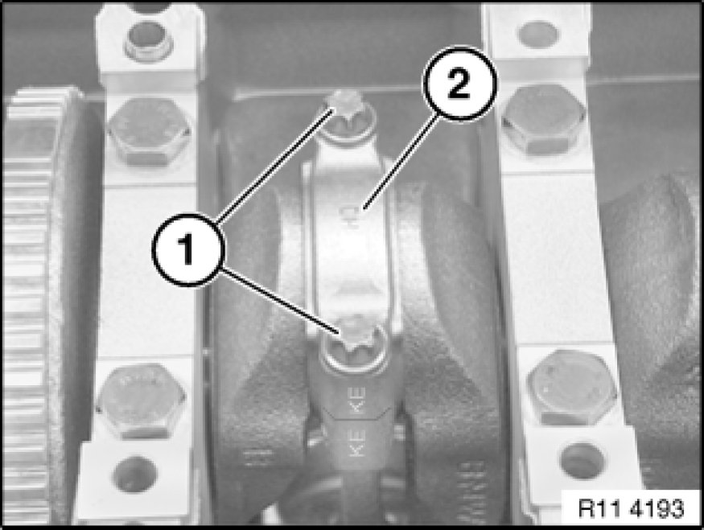
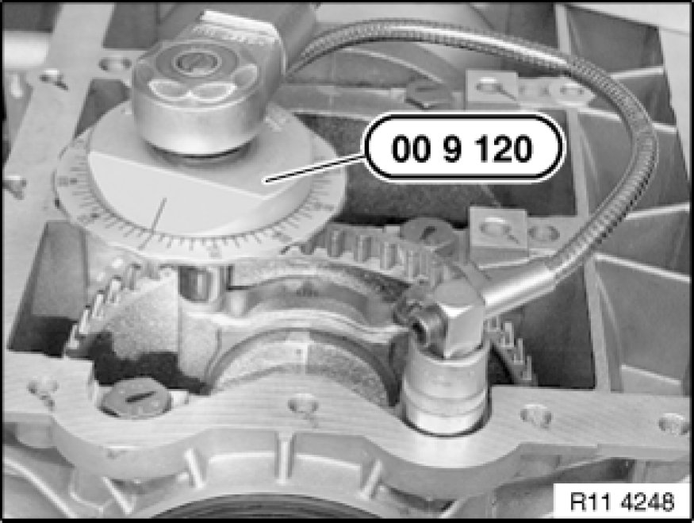

Connecting Rod Bearing: Service and Repair
11 24 571 - Replacing all connecting rod bearing shells (N52K)

Special tools required:
- 00 2 590
- 00 9 120 00 9 120 Torque Angle Measuring Dial

Important!
All crank pins are connected with the crankshaft.
Modified procedure: The colors of the connecting rod bearing shells are the same at the top and bottom.
The Blue / Red connecting rod bearing shell colors are no longer fitted in combination.

Necessary preliminary tasks:
- Remove oil sump
Important!
All crankshaft crank pins are classified.
Possible classifications per connecting rod at top and bottom:
r: - Red
b: - Blue
Only one color may be fitted per big end bearing cap and connecting rod.
In direction of arrow from (1 to 2) crank pin (1 to 6).
Example:
Possible classification: rbbrrb
Cylinder 1: - Classification Red / Red
Cylinder 2: - Classification Blue / Blue
Cylinder 3: - Classification Blue / Blue
Cylinder 4: - Classification Red / Red
Cylinder 5: - Classification Red / Red
Cylinder 6: - Classification Blue / Blue

Release conrod bolts (1).
Remove connecting rod bearing cap (2).
Important!
Risk of damage to cylinder wall and to crankshaft.
Gently release connecting rod from crankshaft.
Remove connecting rod bearing shells (1 and 2).
Install new conrod bearing shells.
Installation Note:
Pay attention to guide lugs during installation.
Important!
All crankshaft crank pins are classified.
In each case insert only one color of connecting rod bearing shell (1 and 2) for each connecting rod.
Check conrod bearing clearance.
Piston in BDC position.
To determine the connecting rod bearing play, make sure that the bearing points are clean and free from oil and grease.
Fit special tool 00 2 590 (Plastigage Type PG 1) to the oil-free crankshaft.
Fit conrod bearing cap so that pairing letters match up.

Important!
Do not distort conrods or crankshaft.
Use the old conrod bolts to check conrod clearance.
Tighten down conrod bolts with special tool 00 9 120 00 9 120 Torque Angle Measuring Dial.
Tightening torque 11 24 1AZ 11 24 Connecting Rods and Bearings.
Unscrew conrod bearing cover. Read off conrod bearing play at width of flattened plastic thread on measurement scale.
Conrod bearing clearance.
- Remove Plastigage
- Coat crankshaft and connecting rod bearing shells with oil
- Install new conrod bolts and tighten down with special tool 00 9 120 00 9 120 Torque Angle Measuring Dial.
Tightening torque 11 24 1AZ 11 24 Connecting Rods and Bearings.

Assemble engine.